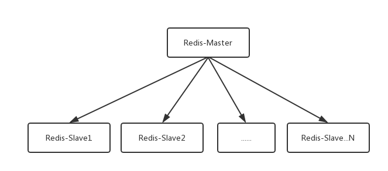
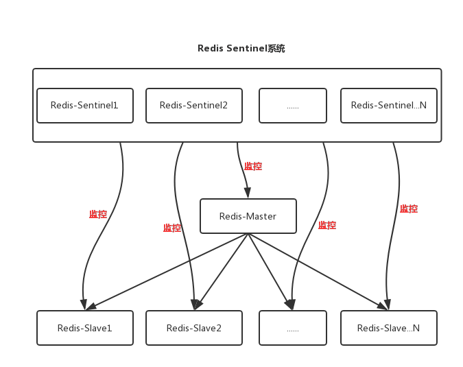
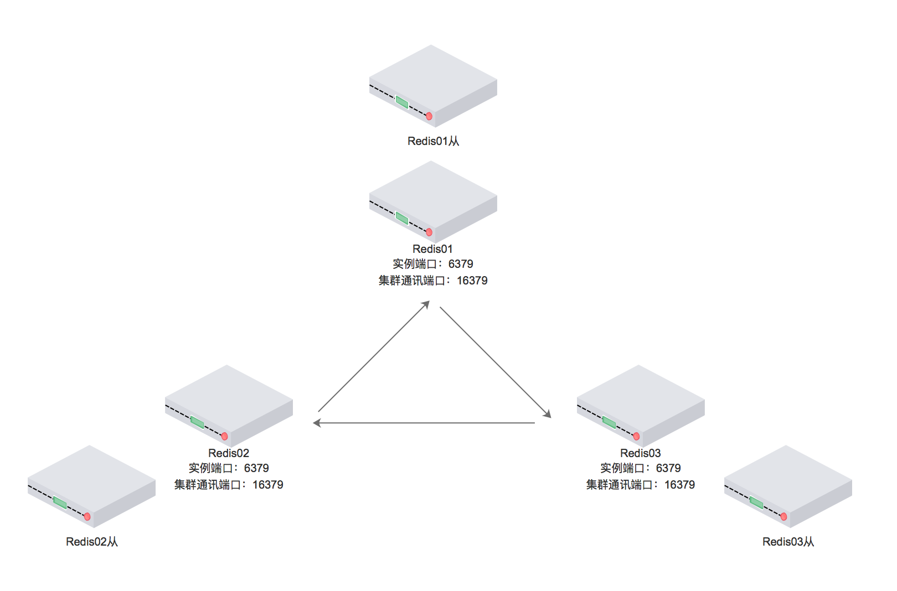

1. 简介
Redis是一个开源，高级的键值存储和一个适用的解决方案，用于构建高性能，可扩展的Web应用程序。它有三个主要特点，使其优越于其它键值数据存储系统：
- Redis将其数据库完全保存在内存中，仅使用磁盘进行持久化。
- 与其它键值数据存储相比，Redis有一组相对丰富的数据类型。
- Redis可以将数据复制到任意数量的从机中。
2. 部署声明
本文基于Centos7系统，由浅入深讲解如何部署Redis的四种模式，分别是：单机模式、主从模式、哨兵模式、集群模式。
需注意，这里因为只用于教学演示，所以这四种模式都是部署在同一台Centos机器上的（通过不同的服务端口区分不同的Redis实例）。实际使用时，一般会使用多台机器部署，此时只需要对应修改IP即可，部署过程是一样的。
3. 前置环境部署
如果只是部署Redis【单机模式/主从模式/哨兵模式】，是不需要安装这个前置环境的。
如果要部署Redis【集群模式（Redis Cluster）】，建议先装完这个前置环境才往下阅读。
这是因为Redis Cluster需要使用ruby脚本构建。虽然Centos7自带了ruby支持库的安装源，但是版本过低（只是2.0.0版本），Redis要求ruby的版本至少为2.2.2。安装方法如下：
yum install centos-release-scl-rh # 会在/etc/yum.repos.d/目录多出一个CentOS-SCLo-scl-rh.repo源先更换yum源安装2.3版本的ruby：
yum install rh-ruby23 -y
scl enable rh-ruby23 bash # 临时变更当前环境变量的ruby版本为2.3（重启后失效）这种安装方式是使得ruby2.0和2.3版本并存，并非升级ruby。 之后若要再使用2.3版本的ruby，需再次执行
scl enable rh-ruby23 bash命令。
查看ruby版本：
ruby -v
# ruby 2.3.6p384 (2017-12-14 revision 61254) [x86_64-linux]安装gem：
yum install rubygems -y安装ruby的redis包（用于redis通讯）：
gem install redis
# 若前面安装ruby版本过低就会报错：
# ERROR: Error installing redis:
# redis requires Ruby version >= 2.2.2.查看gem版本：
gem -v至此前置环境就安装完成了，下面开始讲述Redis四种模式的部署。
4. 单机模式
4.1. 简介
单机模式是Redis最基本的模式，之后的主从、哨兵、集群模式都是据此扩展而来。而且在开发环境下，出于方便起见，一般部署单机模式即可满足调试要求。
4.2. 安装
到官网下载最新版，本文下载的版本是redis-4.0.10.tar.gz ：
- 中文官网：http://www.redis.cn/
- 英文官网（需梯子）：https://redis.io/
上传到Centos服务器，本文上传位置为：
/usr/local/redis-4.0.10.tar.gz
解压安装包：
tar -zxvf redis-4.0.10.tar.gz
由于Redis需要编译安装，先安装gcc编译环境：
yum install gcc
进入Redis安装目录：
cd /usr/local/redis-4.0.10/
编译：
make MALLOC=libc
编译完成后，进入src目录：
cd /usr/local/redis-4.0.10/src/
把 src 目录下的文件安装到 /usr/local/bin ：
make install
4.3. 部署
默认情况下，Redis是通过以下方式启动/停止的：
cd /usr/local/redis-4.0.10/src/ # 切换到启动脚本目录
./redis-server ../redis.conf # 启动Redis
Ctrl + C # 停止Redis这种启动方式非但无法在后台运行，而且也不符合使用习惯。
另外默认情况下Redis也不直接支持开机自启，为此要对其进行改造。
通过命令vi /usr/local/redis-4.0.10/redis.conf编辑Redis配置文件，为支持后台启动：
daemonize yes # 后台启动模式
# 顺便修改一下其他配置项
maxmemory 536870912 # 最大内存（单位byte），需根据实际配置，建议为当前空闲内存的50%左右
dir /tmp/redis # Redis的工作目录（若不存在需手建否则无法启动），默认值为[./]，logfile与dbfilename受其影响
logfile "6379.log" # Redis日志名称（默认不配置，表示输出到stdout），正式部署请设置为合适的名称
dbfilename dump.rdb # Redis数据持久化时的存储位置，正式部署请设置为合适的名称● 单机模式配置redis.conf下载：https://share.weiyun.com/5ZhIKTe 密码：nppwyt ●
新建上面配置的Redis工作目录：
mkdir /tmp/redis然后在/etc目录下新建redis目录：
mkdir /etc/redis拷贝redis.conf配置文件到/etc/redis目录下，并重命名为6379.conf（取的是Redis默认端口名称，Redis启动脚本里的变量会读取这个名称，因此若redis的端口号改了，这个文件名也要修改）：
cp /usr/local/redis-4.0.10/redis.conf /etc/redis/6379.conf拷贝Redis的启动脚本到/etc/init.d目录下，并重命名为redisd：
cp /usr/local/redis-4.0.10/utils/redis_init_script /etc/init.d/redisd通过vi /etc/init.d/redisd命令修改redisd文件，在首行#!/bin/sh下面添加两行（其含义是Redis服务必须在运行级2，3，4，5下被启动或关闭，启动的优先级是90，关闭的优先级是10）：
#!/bin/sh
# chkconfig: 2345 90 10
# description: Redis is a persistent key-value database切换到/etc/init.d目录：
cd /etc/init.d设置为开机自启：
chkconfig redisd on # 若不需要自启则执行 chkconfig redisd off现在可以直接以服务的形式启动Redis了：
service redisd start4.4. 测试
然后通过Redis测试客户端命令redis-cli连接到Redis实例：
cd /usr/local/redis-4.0.10/src/ # 切换到启动脚本目录
./redis-cli -h 127.0.0.1 -p 6379 # 连接到Redis
172.168.10.63:6379> info # 查看Redis信息
# Server
redis_version:4.0.10
redis_git_sha1:00000000
redis_git_dirty:0
redis_build_id:a5e228e715215d35
redis_mode:standalone
os:Linux 2.6.32-358.el6.x86_64 x86_64
arch_bits:64
multiplexing_api:epoll
atomicvar_api:sync-builtin
gcc_version:4.4.7
process_id:26027
run_id:d5f3dd33bb6b52f9b82927992251e21b3a68432e
tcp_port:6379
uptime_in_seconds:1806685
uptime_in_days:20
hz:10
lru_clock:9988483
executable:/usr/local/bin/redis-server
config_file:/etc/redis/6379.conf至此Redis单机模式部署完成。
为了开始下一阶段部署，现在先停止这个Redis进程：
service redisd stop5. 主从模式
5.1. 简介
在实际生产环境下，Redis基本上是不可能部署成单机模式的。一般都需要部署Redis集群实现高可用，以保障业务的稳定运行。
要学会部署Redis集群，那就先从Redis集群中最简单的主从模式说起。
在一些简单小型的应用中，我们可能会看到类似于下图的Redis部署架构。其中Master是主机，Slave是从机，而这种架构方式就是所谓的一主多从：

在这种架构模式下，主机和从机的数据完全一致，主机支持数据的写入和读取等各项操作，而从机则只支持与主机数据的同步和读取。也就是说，客户端可以将数据写入到主机，由主机自动将数据的写入操作同步到从机。
主从模式很好的解决了数据备份问题，并且由于主从服务数据几乎是一致的，因而可以将写入数据的命令发送给主机执行，而读取数据的命令发送给不同的从机执行，从而达到读写分离的目的。
5.2. 部署
下面演示如何部署一个一主三从的主从模式。
为了区分单机模式的部署位置，这里拷贝一下Redis的目录：
cp -r /usr/local/redis-4.0.10 /usr/local/redis-ms下文会基于于/usr/local/redis-ms目录部署主从模式。
由于每个Redis实例都是一个单独的进程，所以需要在每个Redis实例启动时为其分配一个独立的配置文件就能使他们区分开来（同时由于本文是部署在同一台机器，需为每个实例指定不同的服务端口）。
为了在同一台机器上部署一主三从的Redis，准备以下四份配置文件：
| 角色 | 配置文件 | 服务端口 |
|---|---|---|
| 主机 | redis-6379.conf | 6379 |
| 从机 | redis-6380.conf | 6380 |
| 从机 | redis-6381.conf | 6381 |
| 从机 | redis-6382.conf | 6382 |
这四份配置文件均拷贝自
/usr/local/redis-ms/redis.conf，拷贝到/usr/local/redis-ms/目录再修改即可。
主机redis-6379.conf配置文件内容如下：
bind 127.0.0.1 # 正式部署请设为合适的IP
port 6379
daemonize yes
pidfile /var/run/redis_6379.pid
dir /tmp/redis-ms # Redis的工作目录（若不存在需手建否则无法启动），logfile与dbfilename受其影响
logfile "6379.log" # Redis日志名称（默认不配置，表示输出到stdout），正式部署请设置为合适的名称
dbfilename dump-6379.rdb # Redis数据持久化时的存储位置，正式部署请设置为合适的名称● 主从模式配置redis-6379.conf下载：https://share.weiyun.com/5JOX4Nd 密码：qdcfie ●
从机redis-6380.conf配置文件内容如下：
bind 127.0.0.1 # 正式部署请设为合适的IP
port 6380
daemonize yes
pidfile /var/run/redis_6380.pid
dir /tmp/redis-ms # Redis的工作目录（若不存在需手建否则无法启动），logfile与dbfilename受其影响
logfile "6380.log" # Redis日志名称（默认不配置，表示输出到stdout），正式部署请设置为合适的名称
dbfilename dump-6380.rdb # Redis数据持久化时的存储位置，正式部署请设置为合适的名称
slaveof 127.0.0.1 6379 # 标注所从属的主机● 主从模式配置redis-6380.conf下载：https://share.weiyun.com/5SCapFt 密码：4sibg2 ●
从机redis-6381.conf配置文件内容如下：
bind 127.0.0.1 # 正式部署请设为合适的IP
port 6381
daemonize yes
pidfile /var/run/redis_6381.pid
dir /tmp/redis-ms # Redis的工作目录（若不存在需手建否则无法启动），logfile与dbfilename受其影响
logfile "6381.log" # Redis日志名称（默认不配置，表示输出到stdout），正式部署请设置为合适的名称
dbfilename dump-6381.rdb # Redis数据持久化时的存储位置，正式部署请设置为合适的名称
slaveof 127.0.0.1 6379 # 标注所从属的主机● 主从模式配置redis-6381.conf下载：https://share.weiyun.com/5pZ7hup 密码：jiw8gm ●
从机redis-6382.conf配置文件内容如下：
bind 127.0.0.1 # 正式部署请设为合适的IP
port 6382
daemonize yes
pidfile /var/run/redis_6382.pid
dir /tmp/redis-ms # Redis的工作目录（若不存在需手建否则无法启动），logfile与dbfilename受其影响
logfile "6382.log" # Redis日志名称（默认不配置，表示输出到stdout），正式部署请设置为合适的名称
dbfilename dump-6382.rdb # Redis数据持久化时的存储位置，正式部署请设置为合适的名称
slaveof 127.0.0.1 6379 # 标注所从属的主机● 主从模式配置redis-6382.conf下载：https://share.weiyun.com/5rlib8O 密码：xf6qkn ●
新建上面配置的Redis工作目录：
mkdir /tmp/redis-ms然后使用redis-server命令启动Redis主从实例：
cd /usr/local/redis-ms/src/ # 切换到启动脚本目录
./redis-server ../redis-6379.conf # 启动Redis主机，必须先启动
./redis-server ../redis-6380.conf # 启动Redis从机
./redis-server ../redis-6381.conf # 启动Redis从机
./redis-server ../redis-6382.conf # 启动Redis从机5.3. 测试
现在测试Redis主从模式是否能正常工作。
可先通过ps -ef|grep redis命令可查看四个主从进程是否正常启动：
root 3919 1 0 22:08 ? 00:00:02 ./redis-server 127.0.0.1:6379
root 3924 1 0 22:08 ? 00:00:02 ./redis-server 127.0.0.1:6380
root 3930 1 0 22:08 ? 00:00:02 ./redis-server 127.0.0.1:6381
root 3936 1 0 22:08 ? 00:00:02 ./redis-server 127.0.0.1:6382
然后通过Redis测试客户端命令redis-cli分别连接到四台机器：
cd /usr/local/redis-ms/src/ # 切换到启动脚本目录
./redis-cli -h 127.0.0.1 -p 6379 # 连接到Redis主机
./redis-cli -h 127.0.0.1 -p 6380 # 连接到Redis从机
./redis-cli -h 127.0.0.1 -p 6381 # 连接到Redis从机
./redis-cli -h 127.0.0.1 -p 6382 # 连接到Redis从机分别在四个Redis测试客户端执行get命令，获取键名为site的数据：
127.0.0.1:6379> get site
(nil) # 由于是新部署的Redis集群，该键值必定不存在
127.0.0.1:6380> get site
(nil) # 由于是新部署的Redis集群，该键值必定不存在
127.0.0.1:6381> get site
(nil) # 由于是新部署的Redis集群，该键值必定不存在
127.0.0.1:6382> get site
(nil) # 由于是新部署的Redis集群，该键值必定不存在现在在Redis主机6379的客户端写入数据（执行set命令，为键site设置数据）：
127.0.0.1:6379> set site http://exp-blog.com再在三台Redis从机 6380 ~ 6382 的客户端读取数据（执行get命令，获取键名为site的数据）。由于经过主从数据同步，此时三台从机都能取到值：
127.0.0.1:6380> get site
"http://exp-blog.com"
127.0.0.1:6381> get site
"http://exp-blog.com"
127.0.0.1:6382> get site
"http://exp-blog.com"至此Redis主从模式部署完成。
下一阶段哨兵模式的部署是基于主从模式的，可以暂且不用停止Redis进程。
6. 哨兵模式
6.1. 简介
前面所配置的主从模式，虽然实现了读写分离，解决了数据备份问题和单机模式可能存在的性能问题，但是也引入了新的问题：
由于主从模式下可以将读写操作分配给不同的Redis节点，从而达到提高系统吞吐量的目的，但也正是因为这种方式造成了使用上的不便。因为客户端连接到不同的Redis节点时，都需要指定特定的IP端口，若所连接的节点因为故障下线了，主从模式便无法通知客户端切换到另一个可用节点，只能靠手动更改客户端配置并重连。
尤其是如果故障下线的是主节点，那么所有的从节点便会因为没有主节点而同步中断，整个集群会陷入瘫痪（严格来说是所有从节点变成独立节点，再无关联性），直至人工重新指定新的主节点。
为了解决上面的问题，Redis在2.8版本后开始支持哨兵模式，其架构模式如下图：

Redis的Sentinel系统（即哨兵系统）可用于管理多组Redis主从实例，它是Redis的高可用性解决方案。这个系统主要执行以下三个任务：
- 监控（Monitoring）：Sentinel会不断地定期检查主/从节点服务器是否运作正常
- 提醒（Notification）：当被监控的某个节点服务器出现问题时，Sentinel可以通过API向管理员或者其他应用程序发送通知
- 自动故障迁移（Automaticfailover）：当一个主节点不能正常工作时，Sentinel会开始一次自动故障迁移操作，它会将失效主节点下的其中一个从节点升级为新的主节点，并让失效主主节点的其他从节点改为复制新的主节点。当Redis客户端试图连接失效的主节点时，集群也会向客户端返回新主节点的地址，使得集群可以使用新主节点代替失效主节点。
6.2. 部署
下面演示如何在上一阶段的主从模式基础上，增加部署一套哨兵系统。
先准备好三份配置文件：
| 角色 | 配置文件 | 监听端口 |
|---|---|---|
| 哨兵 | sentinel-26380.conf | 26380 |
| 哨兵 | sentinel-26381.conf | 26381 |
| 哨兵 | sentinel-26382.conf | 26382 |
① 这三份配置文件均拷贝自
/usr/local/redis-ms/sentinel.conf，拷贝到/usr/local/redis-ms/目录再修改即可。
② 建议哨兵至少部署3个，并且哨兵节点数量要满足2n+1（n>=1），即奇数个。
哨兵sentinel-26380.conf配置文件内容如下：
bind 127.0.0.1 # 正式部署请设为合适的IP
port 26380
daemonize yes # 后台启动模式（若无配置项则添加）
dir /tmp/redis-ms # Redis的工作目录（若不存在需手建否则无法启动），logfile受其影响
logfile "sentinel-26380.log" # 哨兵日志名称（若无配置项则添加），正式部署请设置为合适的名称
sentinel monitor exp-blog.com 127.0.0.1 6379 2 # 标注所监视的主机（其下的从机会被自动拉取，无需配置）
sentinel down-after-milliseconds exp-blog.com 30000
sentinel parallel-syncs exp-blog.com 1
sentinel failover-timeout exp-blog.com 180000● 哨兵模式配置sentinel-26380.conf下载：https://share.weiyun.com/52UsmNu 密码：fyrtmn ●
哨兵sentinel-26381.conf配置文件内容如下：
bind 127.0.0.1 # 正式部署请设为合适的IP
port 26381
daemonize yes # 后台启动模式（若无配置项则添加）
dir /tmp/redis-ms # Redis的工作目录（若不存在需手建否则无法启动），logfile受其影响
logfile "sentinel-26381.log" # 哨兵日志名称（若无配置项则添加），正式部署请设置为合适的名称
sentinel monitor exp-blog.com 127.0.0.1 6379 2 # 标注所监视的主机（其下的从机会被自动拉取，无需配置）
sentinel down-after-milliseconds exp-blog.com 30000
sentinel parallel-syncs exp-blog.com 1
sentinel failover-timeout exp-blog.com 180000● 哨兵模式配置sentinel-26381.conf下载：https://share.weiyun.com/5muO7vd 密码：8i72bw ●
哨兵sentinel-26382.conf配置文件内容如下：
bind 127.0.0.1 # 正式部署请设为合适的IP
port 26382
daemonize yes # 后台启动模式（若无配置项则添加）
dir /tmp/redis-ms # Redis的工作目录（若不存在需手建否则无法启动），logfile受其影响
logfile "sentinel-26382.log" # 哨兵日志名称（若无配置项则添加），正式部署请设置为合适的名称
sentinel monitor exp-blog.com 127.0.0.1 6379 2 # 标注所监视的主机（其下的从机会被自动拉取，无需配置）
sentinel down-after-milliseconds exp-blog.com 30000
sentinel parallel-syncs exp-blog.com 1
sentinel failover-timeout exp-blog.com 180000● 哨兵模式配置sentinel-26382.conf下载：https://share.weiyun.com/5g6NMkM 密码：db6ugw ●
针对上面几个sentinel-xxxxx.conf配置中的几个关键配置项说明如下：
sentinel monitor exp-blog.com 127.0.0.1 6379 2
监控的主节点的名字为exp-blog.com（这个名字任意的，有效字符为[A-Z] [a-z] [0-9] [._-]）
监控的主节点服务地址127.0.0.1:6379
行尾最后的2表示当集群中有2个以上sentinel认为主节点下线时，才认为其客观下线sentinel down-after-milliseconds exp-blog.com 30000
主节点在30000 ms内无反应，哨兵会开始使用“选举机制”进行主从切换sentinel parallel-syncs exp-blog.com 1
在因主节点失效而发生故障转移（即主从切换）时，最多可以有多少个从节点同时对新的主节点进行并发同步。
这个数字越小，完成故障转移所需的时间就越长（余下的从节点需要排队等待同步）；
但这个数字越大，就意味着越多的从节点因为正在对新的主节点进行同步而不可用。
当从节点只用于查询服务时，可将此值设为1确保最多只有一个从节点因同步而不可用。sentinel failover-timeout exp-blog.com 180000
如果在该180000 ms内未能完成故障转移，则认这次故障转移超时失败。
不过即使超时，从节点也会正确指向新主节点，但不会按照parallel-syncs规则进行同步
接下来就可以启动Redis主从服务和Sentinel系统了。
启动顺序必须严格按照：
Redis Master（主节点） -> Redis Slave（从节点） -> Redis Sentinel（哨兵节点）
主从服务的启动在上一阶段已经做过了，此处就不重述了。
Sentinel系统需要使用redis-sentinel命令启动：
cd /usr/local/redis-ms/src/ # 切换到启动脚本目录
./redis-sentinel ../sentinel-26380.conf # 启动Redis哨兵节点
./redis-sentinel ../sentinel-26381.conf # 启动Redis哨兵节点
./redis-sentinel ../sentinel-26382.conf # 启动Redis哨兵节点6.3. 测试
现在测试Sentinel系统是否能正常工作。
可先通过ps -ef|grep redis命令可查看四个主从进程和三个监控进程是否正常启动：
root 3919 1 0 22:08 ? 00:00:02 ./redis-server 127.0.0.1:6379
root 3924 1 0 22:08 ? 00:00:02 ./redis-server 127.0.0.1:6380
root 3930 1 0 22:08 ? 00:00:02 ./redis-server 127.0.0.1:6381
root 3936 1 0 22:08 ? 00:00:02 ./redis-server 127.0.0.1:6382
root 4342 1 0 22:37 ? 00:00:00 ./redis-sentinel 127.0.0.1:26380 [sentinel]
root 4347 1 0 22:37 ? 00:00:00 ./redis-sentinel 127.0.0.1:26381 [sentinel]
root 4383 1 0 22:38 ? 00:00:00 ./redis-sentinel 127.0.0.1:26382 [sentinel]
然后通过Redis测试客户端命令redis-cli连接到任意一台Sentinel机器查看监控信息（实际生产环境中，一般是不需要连接Sentinel机器的）：
cd /usr/local/redis-ms/src/ # 切换到启动脚本目录
./redis-cli -h 127.0.0.1 -p 26380 # 连接到哨兵机26380
127.0.0.1:26380> info sentinel # 查看监控信息
./redis-cli -h 127.0.0.1 -p 26381 # 连接到哨兵机26381
127.0.0.1:26381> info sentinel # 查看监控信息
./redis-cli -h 127.0.0.1 -p 26382 # 连接到哨兵机26382
127.0.0.1:26382> info sentinel # 查看监控信息
# 三台哨兵的返回信息是一致的：
sentinel_masters:1 # 监控主机1台
sentinel_tilt:0
sentinel_running_scripts:0
sentinel_scripts_queue_length:0
sentinel_simulate_failure_flags:0
# 0号主机名称为exp-blog.com，地址为127.0.0.1:6379，共有三台从机，三台哨兵机
master0:name=exp-blog.com,status=ok,address=127.0.0.1:6379,slaves=3,sentinels=3现在尝试终止Redis主机进程（6379端口节点）来模拟主机下线：
cd /usr/local/redis-ms/src/ # 切换到启动脚本目录
./redis-cli -h 127.0.0.1 -p 6379 # 连接到Redis主机
127.0.0.1:6379> shutdown # 终止Redis服务然后连接到任意一台哨兵机，查看当前的监控信息：
cd /usr/local/redis-ms/src/ # 切换到启动脚本目录
./redis-cli -h 127.0.0.1 -p 26380 # 连接到哨兵机26380
127.0.0.1:26380> info sentinel # 查看监控信息
# 返回监控信息
sentinel_masters:1
sentinel_tilt:0
sentinel_running_scripts:0
sentinel_scripts_queue_length:0
sentinel_simulate_failure_flags:0
master0:name=exp-blog.com,status=ok,address=127.0.0.1:6382,slaves=3,sentinels=3 # 主机地址发生变化了不难发现主机变成了127.0.0.1:6382，登陆这台主机查看主从信息：
cd /usr/local/redis-ms/src/ # 切换到启动脚本目录
./redis-cli -h 127.0.0.1 -p 6382 # 连接到Redis主机
127.0.0.1:6382> info replication # 查看主从信息
# 返回主从信息
role:master
connected_slaves:2 # 这台主机下有2台从机
slave0:ip=127.0.0.1,port=6381,state=online,offset=254791,lag=1 # 0号从机是 127.0.0.1:6381
slave1:ip=127.0.0.1,port=6380,state=online,offset=254791,lag=1 # 1号从机是 127.0.0.1:6380由此可知，当原主机6379下线后，原从机6382被哨兵系统提升为新的主机，而其他的两台从机6380和6381变成新主机6382的从机。此时集群系统变成一主两从。
现在重新启动6379机器：
cd /usr/local/redis-ms/src/ # 切换到启动脚本目录
./redis-server ../redis-6379.conf # 启动Redis机器再登陆新主机127.0.0.1:6382查看主从信息：
cd /usr/local/redis-ms/src/ # 切换到启动脚本目录
./redis-cli -h 127.0.0.1 -p 6382 # 连接到Redis主机
127.0.0.1:6382> info replication # 查看主从信息
# 返回主从信息
role:master
connected_slaves:3 # 这台主机下变成有3台从机
slave0:ip=127.0.0.1,port=6381,state=online,offset=254791,lag=1 # 0号从机是 127.0.0.1:6381
slave1:ip=127.0.0.1,port=6380,state=online,offset=254791,lag=1 # 1号从机是 127.0.0.1:6380
slave2:ip=127.0.0.1,port=6379,state=online,offset=365581,lag=1 # 新挂接的2号从机是 127.0.0.1:6379由此可知，当6379机器重新上线后，并不会恢复原主机的身份，而是被哨兵系统挂接到新主机6382下，成为其从机。此时集群系统重新变成一主三从。
至此Redis哨兵模式部署完成。
为了开始下一阶段部署，现在先停止前面部署的所有Redis进程：
pkill redis6.4. 附：哨兵模式一键启动/停止/重启脚本
● 脚本下载：https://share.weiyun.com/5hLLA40 密码：qiwc5g ●
此脚本是根据上文的部署方式和位置编写的，仅适用于Redis节点均在同一台机器的场景。
若要移植到其他地方使用，需要根据实际情况修改。
脚本内容如下：
#!/bin/bash
# 根据主从/哨兵模式的部署目录对应修改
cd /usr/local/redis-ms/src/
# 启动函数
start()
{
./redis-server ../redis-6379.conf &
./redis-server ../redis-6380.conf &
./redis-server ../redis-6381.conf &
./redis-server ../redis-6382.conf &
./redis-sentinel ../sentinel-26380.conf &
./redis-sentinel ../sentinel-26381.conf &
./redis-sentinel ../sentinel-26382.conf &
echo "all running"
}
# 停止函数
stop()
{
ps -ef | grep "redis" | grep -v "grep" |awk '{print $2}'| while read pid
do
C_PID=$(ps --no-heading $pid | wc -l)
if [[ $C_PID == "1" ]]; then
kill -9 $pid
echo "PID=$pid is dead"
else
echo "PID=$pid not exists"
fi
done
echo "all dead"
}
# 脚本入口参数 start|stop|restart
case "$1" in
start)
start
;;
stop)
stop
;;
restart)
stop
start
;;
*)
printf 'Usage: %s {start|stop|restart}\n'"$prog"
exit 1
;;
esac这是shell脚本，保存为redis-mss.sh（文件名任意）即可执行（若无法执行可能是换行符非Linux格式的问题，可尝试通过dos2unix命令修正换行符）。
使用方式如下：
sh redis-mss.sh start # 启动
sh redis-mss.sh stop # 停止
sh redis-mss.sh restart # 重启7. 集群模式
7.1. 简介
Redis在3.0版本后开始支持集群模式（Redis Cluster），目前官方一直都在维护中，具有代表性，建议优先使用。
Redis Cluster是一种服务器Sharding技术，只要将查询请求发送到Redis Cluster中的任意节点，接收到请求的节点会就将查询请求发送到正确的节点上执行：
当Redis客户端操作的key恰好在所查询的Redis节点上时，就像操作Redis单例一样。
当客户端操作的key没有分配到所查询的Redis节点上时，Redis会返回转向指令，指向正确的Redis节点，这类似于浏览器页面的302 重定向跳转。
Redis Cluster并没有使用一致性Hash，而是采用slot（槽）的概念，一共分成16384个槽。Redis Cluster要保证16384个槽对应的Redis节点都正常工作，否则一旦某个Redis节点发生故障，那它负责的slots也就失效，整个集群将不能工作。
为了增加集群的高可用性，官方推荐的方案是将Redis节点配置成主从结构，即一个主节点，挂N个从节点。这时，如果主节点失效，Redis Cluster会根据选举算法在从节点中选择一个上升为主节点，整个集群继续对外提供服务。
Redis Cluster的架构模式如下图：

上图描述的是六个redis实例构成的集群（三主三从），其中：
- 6379端口为客户端通讯端口
- 16379端口为集群总线端口
- 集群内部划分为16384个数据分槽，分布在三个主节点中
- 从节点没有分槽，不会参与集群投票，也不会提供数据读取服务，仅作为主节点的备份
- 三个主节点中平均分布着16384数据分槽的三分之一，每个节点中不会存在重复数据，仅仅使用自己的从机帮忙冗余
Redis Cluster具有以下优点：
- 无中心架构，支持动态扩容，对业务透明
- 具备Sentinel的监控和自动故障迁移能力
- 高性能，客户端直连Redis服务，免去了Proxy代理的损耗
客户端不需要连接集群所有节点，连接集群中任何一个可用节点即可（实际上是必须连接整个集群的，避免单点故障导致客户端不可用）
Redis Cluster同时也具有以下缺点：
- 部署和运维复杂
- 数据迁移需要人工干预
- 只能使用0号数据库
- 不支持批量操作
- 分布式逻辑和存储模块耦合
7.2. 部署
下面演示如何部署集群模式。
官方推荐Redis Cluster至少需要六个节点，即三主三从。
这里准备六个Redis节点，同时为了区分主从/哨兵模式的部署位置，顺便拷贝一下Redis集群节点的目录（以节点端口号区分）：
mkdir /usr/local/redis-cluster # 创建Redis集群目录
cp /usr/local/redis-4.0.10/src/redis-trib.rb /usr/local/redis-cluster/ # 集群构建脚本
cp -r /usr/local/redis-4.0.10 /usr/local/redis-cluster/redis-6390 # Redis集群节点目录
cp -r /usr/local/redis-4.0.10 /usr/local/redis-cluster/redis-6391 # Redis集群节点目录
cp -r /usr/local/redis-4.0.10 /usr/local/redis-cluster/redis-6392 # Redis集群节点目录
cp -r /usr/local/redis-4.0.10 /usr/local/redis-cluster/redis-6393 # Redis集群节点目录
cp -r /usr/local/redis-4.0.10 /usr/local/redis-cluster/redis-6394 # Redis集群节点目录
cp -r /usr/local/redis-4.0.10 /usr/local/redis-cluster/redis-6395 # Redis集群节点目录下文会基于
/usr/local/redis-cluster/redis-xxxx目录部署集群模式。
然后配置这六个Redis节点的配置文件，其配置基本相同（主从无需配置，在后面初次构建集群时会自动分配；尔后若添加新节点，可人工指定是主节点还是从节点）：
| 角色 | 配置文件 | 服务端口 |
|---|---|---|
| 集群节点 | /usr/local/redis-cluster/redis-6390/redis.conf | 6390 |
| 集群节点 | /usr/local/redis-cluster/redis-6391/redis.conf | 6391 |
| 集群节点 | /usr/local/redis-cluster/redis-6392/redis.conf | 6392 |
| 集群节点 | /usr/local/redis-cluster/redis-6393/redis.conf | 6393 |
| 集群节点 | /usr/local/redis-cluster/redis-6394/redis.conf | 6394 |
| 集群节点 | /usr/local/redis-cluster/redis-6395/redis.conf | 6395 |
配置文件/usr/local/redis-cluster/redis-639x/redis.conf的内容如下（仅端口号不同）：
bind 127.0.0.1 # 正式部署请设为合适的IP
port 639x
daemonize yes
pidfile /var/run/redis_639x.pid
dir /tmp/redis-cluster # Redis的工作目录（若不存在需手建否则无法启动），logfile与dbfilename受其影响
logfile "639x.log" # Redis日志名称（默认不配置，表示输出到stdout），正式部署请设置为合适的名称
dbfilename dump-639x.rdb # Redis数据持久化时的存储位置，正式部署请设置为合适的名称
cluster-enabled yes # 启用集群模式
cluster-config-file nodes-639x.conf # 集群节点的配置文件，由集群创建，但若同一台主机上的名称需唯一
cluster-node-timeout 15000● 集群模式配置redis-639x.conf下载：链接：https://share.weiyun.com/5YJ5V6S 密码：2fha9v ●
新建上面配置的Redis集群工作目录：
mkdir /tmp/redis-cluster然后使用redis-server命令启动六个Redis节点：
cd /usr/local/redis-cluster/redis-6390/src/ # 切换到Redis-6390节点的启动脚本目录
./redis-server ../redis.conf # 启动Redis节点
cd /usr/local/redis-cluster/redis-6391/src/ # 切换到Redis-6391节点的启动脚本目录
./redis-server ../redis.conf # 启动Redis节点
cd /usr/local/redis-cluster/redis-6392/src/ # 切换到Redis-6392节点的启动脚本目录
./redis-server ../redis.conf # 启动Redis节点
cd /usr/local/redis-cluster/redis-6393/src/ # 切换到Redis-6393节点的启动脚本目录
./redis-server ../redis.conf # 启动Redis节点
cd /usr/local/redis-cluster/redis-6394/src/ # 切换到Redis-6394节点的启动脚本目录
./redis-server ../redis.conf # 启动Redis节点
cd /usr/local/redis-cluster/redis-6395/src/ # 切换到Redis-6395节点的启动脚本目录
./redis-server ../redis.conf # 启动Redis节点先通过ps -ef|grep redis命令可查看六个节点进程是否正常启动：
root 20305 1 0 01:41 ? 00:00:00 ./redis-server 127.0.0.1:6390 [cluster]
root 20320 1 0 01:43 ? 00:00:00 ./redis-server 127.0.0.1:6391 [cluster]
root 20325 1 0 01:43 ? 00:00:00 ./redis-server 127.0.0.1:6392 [cluster]
root 20330 1 0 01:43 ? 00:00:00 ./redis-server 127.0.0.1:6393 \[cluster]
root 20335 1 0 01:43 ? 00:00:00 ./redis-server 127.0.0.1:6394 [cluster]
root 20340 1 0 01:43 ? 00:00:00 ./redis-server 127.0.0.1:6395 [cluster]然后使用Redis官方提供的工具redis-trib.rb（注意：这个是ruby脚本，需要安装相关支持库，否则无法运行）把这6个节点组建成集群（注意：若集群节点分布在多台不同的机器上，只需其中一个机器执行这条命令即可，但要包含所有机器的集群节点）：
cd /usr/local/redis-cluster/ # 切换到集群构建脚本目录
./redis-trib.rb create --replicas 1 127.0.0.1:6390 127.0.0.1:6391 127.0.0.1:6392 127.0.0.1:6393 127.0.0.1:6394 127.0.0.1:6395若以后机器IP发生变更，需要重新执行此命令重建集群（重建集群需要先停止集群中所有节点进程，然后删除原集群中所有节点的node.conf文件，最后按照上文步骤构建集群即可）。
此时Redis会返回正在构建的集群信息，返回的信息大概意思是“正在把slots槽位分配到6个节点的集群，其中6390、6391、6392是主节点，6394是6390的从节点，6395是6391的从节点，6393是6392的从节点”。
这里的主从分配是自动的，若确认无误则输入yes：
>>> Creating cluster
>>> Performing hash slots allocation on 6 nodes…
Using 3 masters: # 三主
127.0.0.1:6390
127.0.0.1:6391
127.0.0.1:6392
Adding replica 127.0.0.1:6394 to 127.0.0.1:6390 # 三从
Adding replica 127.0.0.1:6395 to 127.0.0.1:6391
Adding replica 127.0.0.1:6393 to 127.0.0.1:6392
>>> Trying to optimize slaves allocation for anti-affinity
[WARNING] Some slaves are in the same host as their master
M: ac2520bab97d151897afb5e6f3ca60a673010227 127.0.0.1:6390
slots:0-5460 (5461 slots) master
M: 3768ff79e3e58a0ee9c1fef1ab04e7e395196fa8 127.0.0.1:6391
slots:5461-10922 (5462 slots) master
M: ac19a87740dc0f0559f10cd1eae617cfcd51b04a 127.0.0.1:6392
slots:10923-16383 (5461 slots) master
S: d93d05facb7db5c223d0959a0e58d232334057e4 127.0.0.1:6393
replicates 3768ff79e3e58a0ee9c1fef1ab04e7e395196fa8
S: 69546e0a773b6548a37c5d55329eac575c5d7cca 127.0.0.1:6394
replicates ac19a87740dc0f0559f10cd1eae617cfcd51b04a
S: ab7405fc14dbc4e883644bccc6d8602992780b44 127.0.0.1:6395
replicates ac2520bab97d151897afb5e6f3ca60a673010227
Can I set the above configuration? (type "yes" to accept): yes # 若确认无误则输入yes
若构建集群成功，则会返回集群内这6个节点的信息：
>>> Nodes configuration updated
>>> Assign a different config epoch to each node
>>> Sending CLUSTER MEET messages to join the cluster
Waiting for the cluster to join….
>>> Performing Cluster Check (using node 127.0.0.1:6390)
M: ac2520bab97d151897afb5e6f3ca60a673010227 127.0.0.1:6390
slots:0-5460 (5461 slots) master
1 additional replica(s)
M: 3768ff79e3e58a0ee9c1fef1ab04e7e395196fa8 127.0.0.1:6391
slots:5461-10922 (5462 slots) master
1 additional replica(s)
S: 69546e0a773b6548a37c5d55329eac575c5d7cca 127.0.0.1:6394
slots: (0 slots) slave
replicates ac19a87740dc0f0559f10cd1eae617cfcd51b04a
M: ac19a87740dc0f0559f10cd1eae617cfcd51b04a 127.0.0.1:6392
slots:10923-16383 (5461 slots) master
1 additional replica(s)
S: ab7405fc14dbc4e883644bccc6d8602992780b44 127.0.0.1:6395
slots: (0 slots) slave
replicates ac2520bab97d151897afb5e6f3ca60a673010227
S: d93d05facb7db5c223d0959a0e58d232334057e4 127.0.0.1:6393
slots: (0 slots) slave
replicates 3768ff79e3e58a0ee9c1fef1ab04e7e395196fa8
[OK] All nodes agree about slots configuration.
>>> Check for open slots…
>>> Check slots coverage…
[OK] All 16384 slots covered.
7.3. 测试
现在测试Redis Cluster是否能正常工作。
通过Redis测试客户端命令redis-cli连接到集群任意一个节点：
cd /usr/local/redis-4.0.10/src/ # 切换到启动脚本目录
./redis-cli -c -h 127.0.0.1 -p 6390 # 以集群方式连接到Redis-6390节点这里需要注意，与前面单机/主从/哨兵模式不同的是，客户端命令redis-cli需要增加一个-c参数，表示是连接到集群，这样客户端的读写行为才是在整个集群中可见的。
若不加-c参数虽然也可连接，但是仅仅是连接到当前的节点，是无法进行数据读写的（除非所读写的数据的键值，经过Hash计算得到的slot槽号，刚好在这个节点里面）。
现在在6390节点执行get命令，获取键名为site的数据：
127.0.0.1:6390> get site
(nil) # 由于是新部署的Redis集群，该键值必定不存在然后在6390节点写入数据（执行set命令，为键site设置数据）：
127.0.0.1:6390> set site http://exp-blog.com再通过Redis测试客户端命令redis-cli连接到集群另一个节点：
cd /usr/local/redis-4.0.10/src/ # 切换到启动脚本目录
./redis-cli -c -h 127.0.0.1 -p 6395 # 以集群方式连接到Redis-6395节点在6395节点执行get命令，获取键名为site的数据（经过集群节点转发请求，可以取到数据）：
127.0.0.1:6395> get site
"http://exp-blog.com"现在尝试一下不以集群方式连接到节点6395，会发生什么：
cd /usr/local/redis-4.0.10/src/ # 切换到启动脚本目录
./redis-cli -h 127.0.0.1 -p 6395 # 以单点方式连接到Redis-6395节点（无-c参数）
127.0.0.1:6395> get site # 获取键值为site的数据
(error) MOVED 9421 127.0.0.1:6392 # 报错：该数据在6392节点的9421槽位
127.0.0.1:6395> set site http://exp-blog.com # 设置键为site的值
(error) MOVED 9421 127.0.0.1:6392 # 报错：该键应该设置到6392节点的9421槽位
# 有些版本的报错信息是这样的，意思是相同的：
# -> Redirected to slot [9421] located at 127.0.0.1:6392之所以会发生这种情况，其实最开始的Redis Cluster架构介绍的时候就已经解释了原因了：
Redis Cluster没有使用一致性Hash，而是采用slot（槽）的概念，一共分成16384个槽。在构建集群时，这些槽会不重复地平均被分配到集群中的主节点。
在读写数据时，Redis Cluster会先计算该数据的键值的slot号，然后再把读写请求分配到该slot号所属的Redis节点。
而当不以集群方式连接到集群节点时，在计算slot号后，读写请求的分配工作却无法执行，就会出现上述报错。
7.4. 集群的关闭/重启
Redis Cluster的官方文档并没有提供整个集群的关闭与重启的方法。推测可能是由于集群所有节点同时挂掉的可能性不高，毕竟即使偶尔集群中某个节点挂掉了，待其重启后又会自动重新加入集群，并不会带来太大影响。
但是可能性不高并不代表不会发生，如何关闭/重启整个集群的方式还是需要知道的。
集群的关闭，执行这个命令即可（如果是部署到多台IP机器，需要登陆到每一台机器执行）：
pkill redis # 是的，直接杀掉集群的全部节点进程就可以了集群的重启，只需要重新启动原集群中每一个节点就可以了，集群会自动恢复到关闭之前的状态（前提是不能删除node-*.conf、*.aof、*.rdb文件，否则会造成集群数据丢失）。
至此Redis Cluster集群模式部署完成。
7.5. 附：集群模式一键启动/停止/重启脚本
● 脚本下载：https://share.weiyun.com/5Q9lCkE 密码：aby4vq ●
此脚本是根据上文的部署方式和位置编写的，仅适用于Redis节点均在同一台机器的场景。
若要移植到其他地方使用，需要根据实际情况修改。
脚本内容如下：
#!/bin/bash
# 根据主从/哨兵模式的部署目录对应修改
export cluster_path=/usr/local/redis-cluster
# 启动函数
start()
{
${cluster_path}/redis-6390/src/redis-server ${cluster_path}/redis-6390/redis.conf &
${cluster_path}/redis-6391/src/redis-server ${cluster_path}/redis-6391/redis.conf &
${cluster_path}/redis-6392/src/redis-server ${cluster_path}/redis-6392/redis.conf &
${cluster_path}/redis-6393/src/redis-server ${cluster_path}/redis-6393/redis.conf &
${cluster_path}/redis-6394/src/redis-server ${cluster_path}/redis-6394/redis.conf &
${cluster_path}/redis-6395/src/redis-server ${cluster_path}/redis-6395/redis.conf &
echo "all running"
}
# 停止函数
stop()
{
ps -ef | grep "redis" | grep -v "grep" |awk '{print $2}'| while read pid
do
C_PID=$(ps --no-heading $pid | wc -l)
if [[ $C_PID == "1" ]]; then
kill -9 $pid
echo "PID=$pid is dead"
else
echo "PID=$pid not exists"
fi
done
echo "all dead"
}
# 脚本入口参数 start|stop|restart
case "$1" in
start)
start
;;
stop)
stop
;;
restart)
stop
start
;;
*)
printf 'Usage: %s {start|stop|restart}\n'"$prog"
exit 1
;;
esac这是shell脚本，保存为redis-cluster.sh（文件名任意）即可执行（若无法执行可能是换行符问题，可尝试通过dos2unix命令修正换行符）。
使用方式如下：
sh redis-cluster.sh start # 启动
sh redis-cluster.sh stop # 停止
sh redis-cluster.sh restart # 重启8. 附：Redis核心配置文件汉化版注释
8.1. 服务配置redis.conf
● 汉化配置文件redis-chs.conf下载：https://share.weiyun.com/57e0NrS 密码：m48s6g ●
8.2. 哨兵配置sentinel.conf
● 汉化配置文件sentinel-chs.conf下载：https://share.weiyun.com/5eFlsU6 密码：4vr68i ●
9. 附：Jedis客户端封装
官方提供的Jedis的POM如下：
<dependency>
<groupId>redis.clients</groupId>
<artifactId>jedis</artifactId>
<version>2.9.0</version>
</dependency>Jedis是在Java中比较强大的Redis客户端连接工具，暴露了很多Redis的API接口，能够很灵活地操作Redis。但是也正由于暴露了太多Redis的连接细节、过份灵活，在生产环境中使用并不方便。
为了解决这些缺点，使之更易于使用，我在2.9.0版本之上做了封装，其主要特点有：
- 屏蔽Jedis与JedisCluster的连接细节和差异，统一封装成RedisClient类，并内置连接池
- 统一Jedis与JedisCluster连接的配置项，封装成RedisBean类，主要供RedisClient使用
- 屏蔽byte[]数据类型，所有实现了序列化接口的对象均可直接在Redis进行读写
- 保留String数据类型（并不会序列化成byte[]，目的是保留与其他程序交互数据的方式）
- 把Redis的Map封装成RedisMap<T>类（key强制为String），暴露API模仿Java的Map
- 把Redis的Set封装成RedisSet<T>类，暴露API模仿Java的Set
- 把Redis的List封装成RedisList<T>类，暴露API模仿Java的List
- 把Redis的单键值对封装成RedisObj<T>类
下面是各个场景的使用样例演示（源码见Github）：
import exp.libs.warp.db.redis.RedisClient;
import exp.libs.warp.db.redis.bean.RedisList;
import exp.libs.warp.db.redis.bean.RedisMap;
import exp.libs.warp.db.redis.bean.RedisObj;
import exp.libs.warp.db.redis.bean.RedisSet;
/**
* <PRE>
* RedisClient测试/场景演示.
* </PRE>
* <B>PROJECT : </B> exp-libs
* <B>SUPPORT : </B> <a href="http://www.exp-blog.com" target="_blank">www.exp-blog.com</a>
* @version 2018-07-31
* @author EXP: 272629724@qq.com
* @since jdk版本：jdk1.6
*/
public class TestRedisClient {
public static void main(String[] args) {
/*********************** Redis连接样例 ***********************/
// 场景1 - Redis 单机模式
// 127.0.0.1:6379
RedisClient redis = new RedisClient("127.0.0.1", 6379);
// 场景2 - Redis 主从模式
// （若用于[读写]只能连接主机，若仅[读]则可连接主/从，但无论如何只能连接其中一台）
// 主机： 127.0.0.1:6379
// 从机： 127.0.0.1:6380, 127.0.0.1:6381, 127.0.0.1:6382
redis = new RedisClient("127.0.0.1", 6379);
// 场景3 - Redis 哨兵模式
// （若用于[读写]只能连接主机，若仅[读]则可连接主/从，但无论如何只能连接其中一台，哨兵不允许连接）
// 主机： 127.0.0.1:6379
// 从机： 127.0.0.1:6380, 127.0.0.1:6381, 127.0.0.1:6382
// 哨兵： 127.0.0.1:26380, 127.0.0.1:26381, 127.0.0.1:26382
redis = new RedisClient("127.0.0.1", 6379);
// 场景4 - Redis 集群模式
// 集群节点 （需同时连接所有节点）：
// 127.0.0.1:6390, 127.0.0.1:6391, 127.0.0.1:6392
// 127.0.0.1:6393, 127.0.0.1:6394, 127.0.0.1:6395
redis = new RedisClient(
"127.0.0.1:6390", "127.0.0.1:6391",
"127.0.0.1:6392", "127.0.0.1:6393",
"127.0.0.1:6394", "127.0.0.1:6395"
);
/*********************** Redis操作样例 ***********************/
// RedisMap示例
final String REDIS_MAP_KEY = "REDIS_MAP_KEY"; // 这个Map对象在Redis中的键值
RedisMap<SerialObject> map = new RedisMap<SerialObject>(REDIS_MAP_KEY, redis);
map.put("site", new SerialObject(1, "http://exp-blog.com"));
map.put("mail", new SerialObject(2, "289065406@qq.com"));
System.out.println(map.size());
System.out.println(map.get("site"));
System.out.println(map.get("mail"));
map.clear();
// RedisList示例
final String REDIS_LIST_KEY = "REDIS_LIST_KEY"; // 这个List对象在Redis中的键值
RedisList<SerialObject> list = new RedisList<SerialObject>(REDIS_LIST_KEY, redis);
list.add(new SerialObject(3, "EXP-LIST"));
System.out.println(list.size());
System.out.println(list.get(0));
list.clear();
// RedisSet示例
final String REDIS_SET_KEY = "REDIS_SET_KEY"; // 这个Set对象在Redis中的键值
RedisSet<SerialObject> set = new RedisSet<SerialObject>(REDIS_SET_KEY, redis);
set.add(new SerialObject(4, "http://exp-blog.com"));
set.add(new SerialObject(5, "289065406@qq.com"));
System.out.println(set.size());
System.out.println(set.getRandom());
set.clear();
// RedisObj示例
final String REDIS_OBJ_KEY = "REDIS_OBJ_KEY"; // 这个Obj对象在Redis中的键值
RedisObj<SerialObject> obj = new RedisObj<SerialObject>(REDIS_OBJ_KEY, redis);
obj.set(new SerialObject(6, "EXP-OBJ"));
System.out.println(obj.exists());
System.out.println(obj.get());
obj.clear();
// 断开redis连接
redis.close();
}
/**
* <pre>
* 测试用的序列化对象.
* 必须实现java.io.Serializable接口
* </pre>
*/
private static class SerialObject implements Serializable {
private static final long serialVersionUID = -6911765769239092862L;
private int id;
private String value;
private SerialObject(int id, String value) {
this.id = id;
this.value = value;
}
public String toString() {
return id + ":" + value;
}
}
}